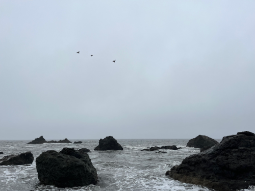

This photo was one of the ones I chose to use for my project. At first glance, there's a lot going on and there's not exactly one thing that stands out since there's so many different objects of all shapes, sizes, and colors. However, I think that's also one of the most interesting parts of this photo. All the objects in the photo are so different that the audience is able to pick and choose on certain things to focus on one at a time. All of the merchandise in the photo also comes from different series and artists as well, so people who may be familiar with a certain show or book may be able to recognize certain pieces of merch. In terms of using this photo in my project, I plan to pick out specific pieces of my collection to lay out in a clearer way and take a photo directly from above so that the items are more clear and easily recognizable. After that, I plan on having each piece of merch tell their own story and why I chose it through either an overlay or a separate section on the side of the photo.
Visual Thinking Analysis: Part 1

Photo by Abigail Wong, DES 157A Winter 2026
This is a picture of the ocean on a somber day. The water stretches out endlessly, with only a few rocks to break the monotony of the grey waves. The color of the sky matches the color of the water, giving the entire photo a melancholic sort of feeling. The story behind this photo and why Abby picked it for her project was that she felt inspired by the feeling that this photo gave her, and so she made a song for the scenery depicted there. When I first heard this, I thought that this photo was perfect for this project, and that the story really made the photo much more interesting than its initial impression gave off. In terms of recommendations for using this photo in her project, I definitely suggest mentioning the story and reasoning behind why she chose it as well as what exact feelings this photo inspired. If she's willing, putting in the song that this photo inspired would also make it much more compelling.
Visual Thinking Strategies: Research
In this New York Times article by Michael Gonchar, 10 photos are used as examples for how we can practice more methodical and careful visual processing skills. Gonchar uses these photos to invite the audience to look closer and encourage curiousity about what's happening in these photos.
After reading this article, I visited the Shopify site to practice my visual thinking skills on their Winter 2026 Renaissance Edition update. Upon landing on the home page, I immediately noticed the renaissance era painting style and the emphasized text on "ai" in "renaissance". Seeing this, I began speculating this Winter 2026 update to Shopify would feature AI heavily. Scrolling through the site, I found that the animations and heavy renaissance style imagery were very charming and invited the audience to pause more on each scene, which is a good strength of this site. However, one thing that I found that was a big drawback was that the text descriptions about the updates were quite vague and didn't really go into detail much. Visually, this website was beautiful but in terms of content, I found myself wanting more context.
Overlays: Design Pattern Research
Naema Baskanderi's article discusses some of the best practices for modals, overlays, and dialog windows. Everything she mentioned from making sure there were appropriate labels and escape hatches to utilizing the lightbox effect and making them mobile friendly were all things that I feel have gotten very prevelant and normalized in UI/UX design. She also acknowledged early on that modals, which used to be helpful when they first were used, have now become annoying to the modern digital user. Ironically, while I was reading through this article, a modal actually popped up asking me to sign up for the site. However, Baskanderi notes that while people have gotten used to simply closing and exiting out of modals and overlays without reading them these days, they still serve as a great way to get the user's attention and alert them while keeping the UI simple and clean. She ends the article by recommending that we consider the following when thinking about using modals: When and how should we show a modal? What will it look like? And what information are we trying to collect or present? These are all questions that I feel get to the heart of UI/UX design and should be kept in mind when pursuing a project.
Forms: Design Pattern Research
In this article by Salim Ansari, 20 techniques for better form design are discussed. After reading through this page, I began to think back on a lot of the previous online forms I've seen and filled out. A lot of these forms utilized the tips and practices mentioned in this article, like chunking a form into multiple steps to minimize cognitive load or putting the more complicated questions last on the form to make the user more commited to finishing the form. I never realized how much thought and deliberation went into the way these forms were designed. For example, the e-commerce platform Big Cartel hosts a lot of online stores for artists and small businesses. Everytime I buy from a business that hosts their site on Big Cartel, I notice that the checkout process use a lot of the practices mentioned in the article to streamline the process and make it user-friendly. They chunk the personal information, payment, and billing processes separately as well as distinguish the optional and required fields to make checking out simple and efficient.